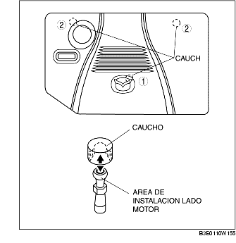

REMOCION/INSTALACION PLACA DE PROTECCION ORIFICIOS BUJIAS (LF)
B3E011000149W01
1. Quitar la placa de protección de los orificios de las bujías según el orden indicado en la figura.
-
Nota
-
• Levantar y quitar la placa de protección de los orificios de las bujías de las zonas de instalación como muestra la figura.

2. Instalar la placa de protección de los orificios de las bujías en el orden contrario al de la remoción.